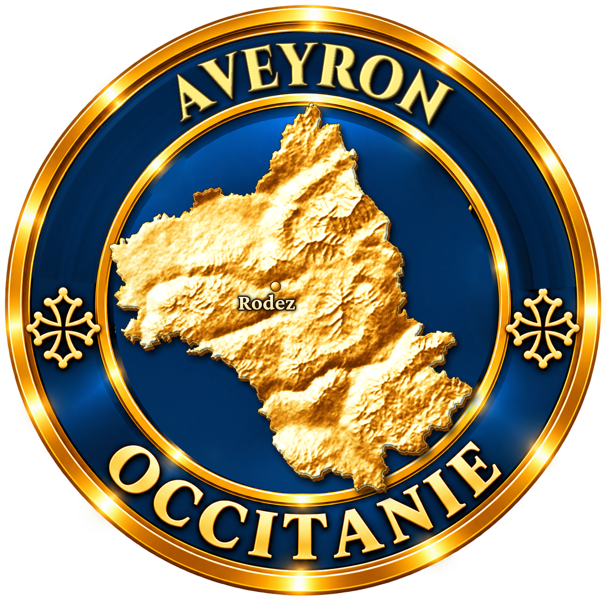
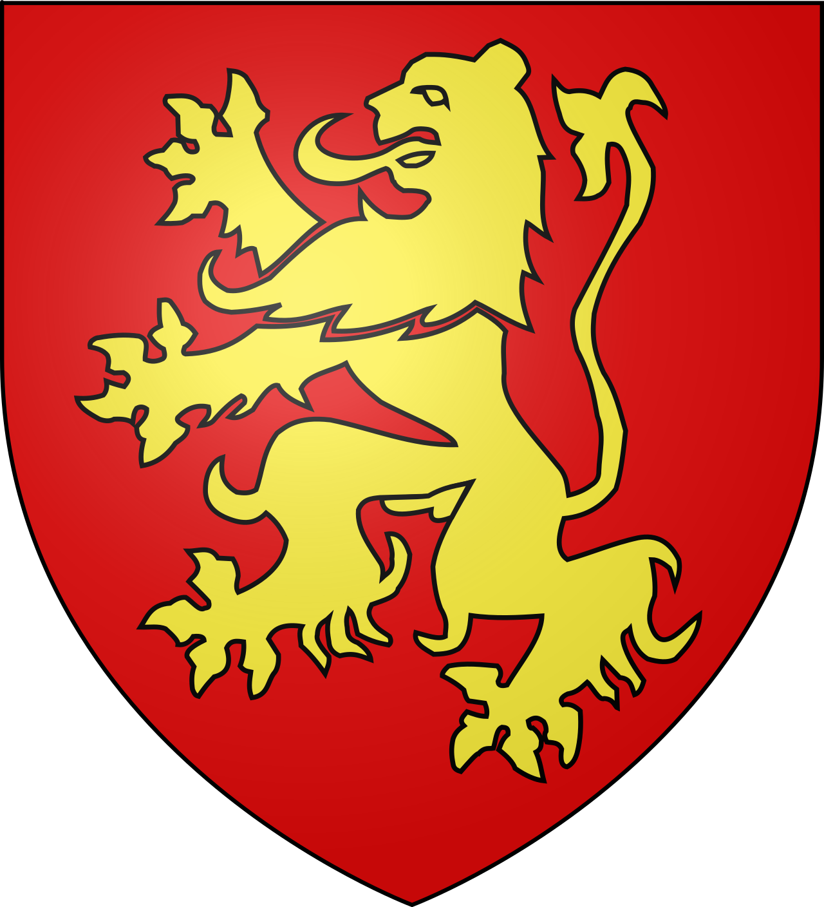
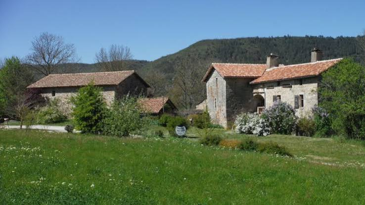
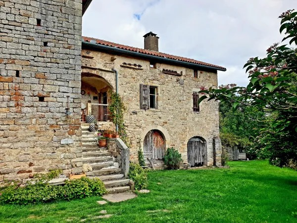

En 1949, les derniers occupants quittent Saint-Caprazy. Pendant un demi-siècle, les ronces et les arbres recouvrent les maisons. Vers l'an 2000, de nouveaux propriétaires rachètent ce qui ressemble à un bois. À la serpe et à la pioche, elle y retrouve un hameau du Moyen Âge presque intact.
Saint-Caprazy se trouve dans le sud de l'Aveyron, entre les falaises de Roquefort et le Rougier de Camarès, sur la commune de Saint-Félix-de-Sorgues. Le hameau est posé au sud-ouest du village, sur l'autre rive de la Sorgues. Son nom évoque saint Caprais, martyr d'Agen, dont le culte était répandu dans le Midi.
Le lieu est attesté dès 1026. C'était alors une seigneurie et une paroisse à part entière, avec sa chapelle.

Vers 1150, Pierre de Caylus fait don de terres à l'ordre des Hospitaliers de Saint-Jean de Jérusalem, qui fondent une commanderie à Saint-Félix. Le premier commandeur connu, cité en 1159, porte le nom du hameau : Gaubert de Saint-Caprazy. Saint-Caprazy devient une annexe de la commanderie, et les chevaliers y exercent leur autorité pendant plus de six siècles.
C'est de cette époque que datent les bâtiments du hameau : six constructions principales, de la fin du XIIe au XIVe siècle. Dans la vallée, on vit de l'élevage et des cultures ; Saint-Félix a même ses moulins à draps dès le XVe siècle. Le cadastre de 1830 dessine encore précisément les maisons du hameau.
Le premier commandeur des Hospitaliers de Saint-Félix portait le nom de ce hameau. Huit siècles plus tard, il avait disparu sous les arbres.
Comme beaucoup d'écarts du sud-Aveyron, Saint-Caprazy se vide lentement. En 1949, il est abandonné. Personne n'entretient plus les toits ni les murs. La végétation envahit les rues, les pièces, les escaliers.
À l'été 2000, les nouveaux propriétaires attaquent la végétation. Famille, amis, bénévoles : il faudra quelque 900 journées de travail pour dégager le hameau. Sous les ronces apparaissent, encore en partie debout, les maisons dessinées sur le cadastre de 1830.
Puis vient le temps des toitures et des murs. Quatre bâtiments sont sauvés de la ruine : l'un est redevenu une maison d'habitation, un autre abrite un atelier, les deux derniers sont mis hors d'eau et hors d'air. En 2019, le hameau est retenu par le Loto du patrimoine pour l'Aveyron, afin de sauver en urgence le bâtiment le plus menacé.

De la commanderie des Hospitaliers de Saint-Félix, détruite pendant les guerres de Religion, il reste notamment la porte Saint-Jean, seule porte d'origine encore intacte du village.
En bas du village, le Pont Vieux franchit la Sorgues sur trois arches et environ 70 mètres. Il date probablement de la fin du XIIIe ou du début du XIVe siècle.
Pour retrouver le hameau sous la végétation, les restaurateurs se sont appuyés sur le cadastre napoléonien de 1830, qui dessinait encore chaque maison.
Lampes, assiettes, bougeoirs, hochets : l'atelier de tournage sur bois installé dans un bâtiment restauré fait de nouveau vivre un métier dans le hameau.